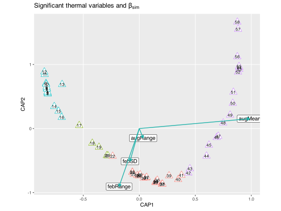
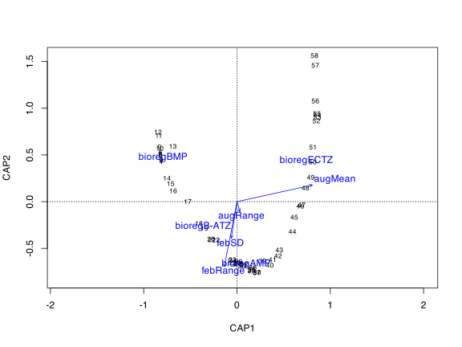
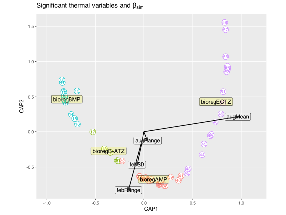

Distance-Based Redundancy Analysis
![]()
| Type | Name | Link |
|---|---|---|
| Slides | Constrained ordination lecture slides | 💾 BCB743_12_constrained_ordination.pdf |
| Reading | Smit et al. (2017) | 💾 Smit_et_al_2017.pdf |
| Supp. to Smit et al. (2017) | 💾 Smit_the_seaweed_data.pdf |
|
| Data | The seaweed environmental data | 💾 SeaweedEnv.RData |
| The seaweed species data | 💾 SeaweedSpp.csv |
|
| The bioregions | 💾 bioregions.csv |
|
| The seaweed coastal section coordinates | 💾 SeaweedSites.csv |
Up to now we have applied unconstrained ordination, or indirect gradient analyses. The lecture slides mention several constrained ordinations and provide some theory for three of them, viz. Redundancy Analysis (RDA), Canonical Correspondence Analysis (CCA), and distance-based Redundancy Analysis (db-RDA). These ordinations form the topic of this Chapter. Constrained ordination is sometimes called ‘direct gradient analysis’ or ‘canonical’ ordination.
Constrained ordination is used to extract and summarise the variation in a set of response variables (species data in the case of ecology) that can be explained by some explanatory variables (‘constraints’), such as measurements of environmental properties at the places where the species data were collected from. These analyses relate two (or more) matrices to one-another—one of them with the species table within which the community structure is sought, and the other an explanatory matrix of environmental conditions (or traits, etc.) that are thought to explain the community patterns. The ecologist is then also able to apply a confirmatory analysis, i.e., methods are available to test the statistical significance of the relationships between explanatory variables and the resultant species composition. This is not possible with unconstrained ordination, and hence unconstrained ordination is not actually a statistical methodology. Note that the confirmation relates to the fact that there is some kind of relationship between the matrices, NOT that the ecological process ACTUALLY exists (although it hints at a good likelihood that it does—but a careful scientist will use this as a starting point for hypothesis generation and design experimental confirmation of the causal relationship hinted at by the confirmation).
We will consider three constrained ordination techniques:
RDA is a direct gradient analysis that highlights linear relationships between components of response variables, i.e. variables that are ‘redundant’ with (i.e. ‘explained’ by) a set of predictors. RDA is an extension of a PCA with a multiple linear regression. The same constraints inherent in a PCA present themselves in an RDA. Use vegan’s
rda()to perform an RDA.CCA is the extension of a CA with multiple regression, and is therefore also based on 𝝌2-metric (dissimilarities). We do not have a choice of specifying which dissimilarity meric to use. CCA performs best when species distribution follows a unimodal model. Use vegan’s
cca()to perform an RDA.db-RDA can be viewed as the extension of a PCoA with multiple regressions. As with a PCoA, we also benefit from being able to specify any dissimilarity matrix as input, and hence this approach is more versatile compared to RDA or CCA. I prefer the db-RDA implemented in vegan’s
capscale(). The help file states: “Distance-based redundancy analysis (dbRDA) is an ordination method similar to Redundancy Analysis (rda), but it allows non-Euclidean dissimilarity indices, such as Manhattan or Bray–Curtis distance.”
The Seaweed Dataset
For this example we will use the seaweed data of Smit et al. (2017); please make sure that you read it! An additional file describing the background to the data is available at the link above (see The_seaweed_data.pdf).
I use two data sets. The first, \(Y\) (in the file seaweeds.csv), comprises distribution records of 847 macroalgal species within each of 58 × 50 km-long sections of the South African coast (updated from Bolton and Stegenga (2002)). This represents ca. 90% of the known seaweed flora of South Africa, but excludes some very small and/or very rare species for which data are insufficient. The data are from verifiable literature sources and John Bolton and Rob Anderson’s own collections, assembled from information collected by teams of phycologists over three decades (Bolton 1986; Stegenga et al. 1997; Bolton and Stegenga 2002; De Clerck et al. 2005).
The second, \(E\) (in env.csv), is a dataset of in situ coastal seawater temperatures (Smit et al. 2013) derived from daily measurements over up to 40 years.
Set-Up the Analysis Environment
Load the seaweed data:
Set-Up the Data
The first step involves the species table (\(Y\)). First I compute the Sørensen dissimilarity, which I then decompose into ‘nestedness-resultant’ (\(\beta_\text{sne}\)) and ‘turnover’ (\(\beta_\text{sim}\)) components using the betapart.core() and betapart.pair() functions of the betapart package (Baselga et al. 2018). These are placed into the matrices \(Y1\) and \(Y2\). It is not necessary to decompose into \(Y1\) and \(Y2\), but I do so here because I want to focus on the turnover component without a nestedness-resultant influence. Optionally, I can apply a CA, PCoA, or nMDS on \(Y\) to find the major patterns in the community data—to let the species data speak for themselves, so to speak. The formal in this chapter analysis will use the species data in a distance-based redundancy analyses (db-RDA as per vegan’s capscale() function) by coupling it with \(E\).
It is now necessary to load the environmental data and some setup files that partition the 58 coastal sections (and the species and environmental data that fall within these sections) into bioregions.
The thermal (environmental) data contain many variables, but in the analysis I use only some of them. These data were obtained from many sites along the South African coast, but using interpolation (not included here) I calculated the thermal properties for each of the coastal sections for which seaweed data are available. Consequently we have a data frame with 58 rows and a column for each of the thermal metrics.
Note that they have the same number of rows as the seaweed data.
I select only some of the thermal variables because I excluded some of the ones I knew were collinear (I assessed this with pairwise correlations). There will still be some multicollinearity, but I will deal with this later after I have fit the constrained ordination (see Section 5). If you require more information about dealing with multicollinearity, refer to the Multiple Regression chapter in The Biostatistics Book.
Next I calculate z-scores:
Four bioregions are recognised for South Africa by Bolton and Anderson (2004) (the variable called bolton), namely the Benguela Marine Province (BMP; coastal sections 1–17), the Benguela-Agulhas Transition Zone (B-ATZ; 18–22), the Agulhas Marine Province (AMP; 19–43/44) and the East Coast Transition Zone (ECTZ; 44/45–58). My plotting functions partition the data into the bioregions and colour code the figures accordingly so I can see regional patterns in \(\beta\)-diversity emerging.
spal.prov spal.ecoreg lombard bolton
1 BMP NE NamBR BMP
2 BMP NE NamBR BMP
3 BMP NE NamBR BMP
4 BMP NE NamBR BMP
5 BMP NE NamBR BMP
6 BMP NE NamBR BMPLoad the geographic coordinates for the coastal sections:
Longitude Latitude
1 16.72429 -28.98450
2 16.94238 -29.38053
3 17.08194 -29.83253
4 17.25928 -30.26426
5 17.47638 -30.67874
6 17.72167 -31.08580[1] 58 2Again, we have 58 rows of data for both the coastal section coordinates and the bioregions. You may omit the dataset with spatial coordinates as it is not actually used further below. Can you think of ways in which to use this dataset to graphically represent the spatial distribution of some environmental or biodiversity data?
Start the db-RDA
I test the niche difference mechanism as the primary species compositional assembly process operating along South African shores. I suggest that the thermal gradient along the coast provides a suite of abiotic (thermal) conditions from which species can select based on their physiological tolerances, and hence this will structure \(\beta\)-diversity. For this mechanism to function one would assume that all species have equal access to all sections along this stretch of coast, thus following ‘Beijerinck’s Law’ that everything is everywhere but the environment selects (Sauer 1991).
I do a db-RDA involving all the thermal variables in \(E1\) (the ‘global analysis’ resulting in the full model, cap_full). The function to use is called capscale() but dbrda() achieves something similar. The analysis shown for \(Y1\):
# fit the full model:
1cap_full <- capscale(Y1 ~., E1)
2# cap_full <- capscale(spp ~., E1, dist = "bray", add = TRUE)
cap_full- 1
-
Because I am using the pre-calculated turnover component of \(\beta\)-diversity, the species information is not available in
summary(cap_full). - 2
-
If I use the species data directly, the species scores are available in
summary(cap_full). This is useful for interpreting the ordination diagram—generally this is advisable for most ordinations, but because I use the turnover component of \(\beta\)-diversity, this was not an option for the current analysis.
Call: capscale(formula = Y1 ~ febMean + febRange + febSD + augMean +
augRange + augSD + annMean + annRange + annSD, data = E1)
Inertia Proportion Rank
Total 7.5234
RealTotal 7.8924 1.0000
Constrained 6.8640 0.8697 8
Unconstrained 1.0284 0.1303 28
Imaginary -0.3690
Inertia is squared Unknown distance
Some constraints or conditions were aliased because they were redundant
Eigenvalues for constrained axes:
CAP1 CAP2 CAP3 CAP4 CAP5 CAP6 CAP7 CAP8
5.620 1.155 0.074 0.006 0.004 0.003 0.001 0.001
Eigenvalues for unconstrained axes:
MDS1 MDS2 MDS3 MDS4 MDS5 MDS6 MDS7 MDS8
0.5768 0.1687 0.1096 0.0413 0.0322 0.0243 0.0179 0.0103
(Showing 8 of 28 unconstrained eigenvalues)Species information is lost during the calculation of the dissimilarity matrix, but if the original matrix of species composition is available, the species scores can be added back into the ordination diagram as weighted means of site scores in which case they occur or as vectors fitted onto the ordination space.
Is the fit significant? I run a permutation test to check:
Permutation test for capscale under reduced model
Permutation: free
Number of permutations: 999
Model: capscale(formula = Y1 ~ febMean + febRange + febSD + augMean + augRange + augSD + annMean + annRange + annSD, data = E1)
Df SumOfSqs F Pr(>F)
Model 8 6.8640 40.881 0.001 ***
Residual 49 1.0284
---
Signif. codes: 0 '***' 0.001 '**' 0.01 '*' 0.05 '.' 0.1 ' ' 1Since the fit is significant (the environmental variables capture the variation seen in the species data), I compute the adjusted \(R^{2}\):
The inertia accounted for by constraints:
The remaining (unconstrained) inertia:
The total inertia:
What is the proportion of variation explained by the full set environmental variables?
Assess Multicollinearity
I check for collinearity using variance inflation factors (VIF), and retain a subset of non-collinear variables to include in the ‘reduced’ or ‘final’ model. A common rule is that values over 10 indicate redundant constraints. I run the VIF procedure iteratively, each time removing the highest VIF and examining the remaining ones until these are mostly below 10.
First on the full model:
febMean febRange febSD augMean augRange augSD annMean
91.129700 6.775959 7.734436 73.090382 8.486631 12.118914 233.400746
annRange annSD
NA 5.396343 I assess the output and drop annMean, which has the highest VIF value. I then re-run the VIF procedure on the slightly reduced model (and iterate until all VIFs are below 10).
febMean febRange febSD augMean augRange augSD annRange annSD
24.996152 6.149245 7.160637 17.717936 8.066340 10.726117 NA 5.396275 Drop febMean:
febRange febSD augMean augRange augSD annRange annSD
6.149245 7.160637 1.619233 8.066340 10.726117 5.529971 5.396275 Drop augSD:
febRange febSD augMean augRange annRange annSD
4.140834 5.251011 1.505510 1.230593 5.457323 5.063169 I select \(E4\) as the variables to construct the final model (cap_final) from.
Note: you can switch to the formula interface within capscale() and specify the variables to use on the right-hand side of the formula (as shown but not executed). You will (obviously) no longer analyse only the turnover component of \(\beta\)-diversity as you’ll be using the raw spp data that encapsulate both nestedness-resultant and turnover processes, but the upshot of this is that you’ll now have species scores. Run this bit of code by yourself and see what the outcome is (the ordiplot is affected, as well as the \(R^{2}\), number of significant reduced axes, etc.).
Assess the Model
I calculate the significance of the model, the variance explained by all the constraints (in \(E4\)) in the final model, as well as the \(R^{2}\):
Permutation test for capscale under reduced model
Permutation: free
Number of permutations: 999
Model: capscale(formula = Y1 ~ febRange + febSD + augMean + augRange + annRange + annSD, data = E4)
Df SumOfSqs F Pr(>F)
Model 6 6.8057 53.233 0.001 ***
Residual 51 1.0867
---
Signif. codes: 0 '***' 0.001 '**' 0.01 '*' 0.05 '.' 0.1 ' ' 1Which axes are significant?
Permutation test for capscale under reduced model
Forward tests for axes
Permutation: free
Number of permutations: 999
Model: capscale(formula = Y1 ~ febRange + febSD + augMean + augRange + annRange + annSD, data = E4)
Df SumOfSqs F Pr(>F)
CAP1 1 5.6128 263.4143 0.001 ***
CAP2 1 1.1129 52.2303 0.001 ***
CAP3 1 0.0722 3.3895 0.273
CAP4 1 0.0049 0.2282 1.000
CAP5 1 0.0016 0.0737
CAP6 1 0.0013 0.0624
Residual 51 1.0867
---
Signif. codes: 0 '***' 0.001 '**' 0.01 '*' 0.05 '.' 0.1 ' ' 1Extract the significant variables in \(E4\) that are influential in the final model as influencers of seaweed community differences amongsth coastal sections:
Permutation test for capscale under reduced model
Terms added sequentially (first to last)
Permutation: free
Number of permutations: 999
Model: capscale(formula = Y1 ~ febRange + febSD + augMean + augRange + annRange + annSD, data = E4)
Df SumOfSqs F Pr(>F)
febRange 1 1.0962 51.4472 0.001 ***
febSD 1 0.1850 8.6810 0.002 **
augMean 1 5.3815 252.5596 0.001 ***
augRange 1 0.0903 4.2363 0.023 *
annRange 1 0.0237 1.1102 0.298
annSD 1 0.0291 1.3641 0.259
Residual 51 1.0867
---
Signif. codes: 0 '***' 0.001 '**' 0.01 '*' 0.05 '.' 0.1 ' ' 1The significant variables are:
cap_final_ax <- which(cap_final_axis_test[, 4] < 0.05)
cap_final_sign_ax <- colnames(E4[,cap_final_ax])
cap_final_sign_ax[1] "febRange" "febSD" "augMean" "augRange"The adjusted \(R^{2}\) for the constraints:
The variance explained by reduced (final) model:
The biplot scores for constraining variables:
CAP1 CAP2
febRange -0.18027862 -0.9059196
febSD -0.08301835 -0.5120321
augMean 0.98573290 0.1536157
augRange 0.03491819 -0.1485218
annRange 0.41317263 -0.1827419
annSD 0.20377426 -0.5717775
attr(,"const")
[1] 4.550643These biplot scores will mark the position of the termini of the arrows that indicate the direction and strength of the constraining variables.
Ordination Diagrams
This code recreates Figure 2a in Smit et al. (2017):
# use scaling = 1 or scaling = 2 for site and species scaling, respectively
cap_final_scrs <- scores(cap_final, display = c("sp", "wa", "lc", "bp"))
# see ?plot.cca for insight into the use of lc vs wa scores
# below I splot the wa (site) scores rather than lc (constraints) scores
site_scores <- data.frame(cap_final_scrs$site) # the wa scores
site_scores$bioreg <- bioreg$bolton
site_scores$section <- seq(1:58)
biplot_scores <- data.frame(cap_final_scrs$biplot)
biplot_scores$labels <- rownames(biplot_scores)
biplot_scores_sign <- biplot_scores[biplot_scores$labels %in% cap_final_sign_ax,]
ggplot(data = site_scores, aes(x = CAP1, y = CAP2, colour = bioreg)) +
geom_point(size = 5.0, shape = 24, fill = "white") +
geom_text(aes(label = section), size = 3.0, col = "black") +
geom_label(data = biplot_scores_sign,
aes(CAP1, CAP2, label = rownames(biplot_scores_sign)),
color = "black") +
geom_segment(data = biplot_scores_sign,
aes(x = 0, y = 0, xend = CAP1, yend = CAP2),
arrow = arrow(length = unit(0.2, "cm"), type = "closed"),
color = "lightseagreen", alpha = 1, size = 0.7) +
xlab("CAP1") + ylab("CAP2") +
ggtitle(expression(paste("Significant thermal variables and ", beta[sim]))) +
theme_grey() +
theme(panel.grid.minor = element_blank(),
legend.position = "none",
aspect.ratio = 0.8)
Note that in Smit et al. (2017, Fig. 2a) I plot the linear constraints (lc scores) rather than the site scores (wa scores). The fact that the positioning of the site scores in ordination space in the figure, above, represents a crude map of South Africa corresponding with geographical coordinates (N-E-S-W) is coincidental (yet it can be logically explained). The coenoclines and gradients are clearly discernible, and the west to east numbering of sites and transitioning of one bioregon into the next are obvious. This map-like arrangement of sites disappears when lc scores are used, but the interpretation of how the thermal drivers structure seaweed biodiversity remains the same.
Factor Variables
# retain only significant variables as per `cap_final_sign_ax`
E5 <- E4[, c(cap_final_sign_ax)]
# append the bioregs after the thermal vars
E5$bioreg <- bioreg$bolton
head(E5) febRange febSD augMean augRange bioreg
1 -0.04433865 -0.2713395 -1.376511 -0.47349787 BMP
2 -0.14318268 -0.1083868 -1.433925 -0.06998551 BMP
3 -0.39321619 -0.1719978 -1.526950 0.02484832 BMP
4 -0.60199306 -0.3120605 -1.579735 -0.05076148 BMP
5 -0.64081940 -0.4095900 -1.546420 -0.09833845 BMP
6 -0.55083241 -0.4294142 -1.458642 -0.11132528 BMP
The default plot works okay and shows all necessary info, but the various pieces (site, species, and centroid scores) are not clearly discernible. Plot the class (factor) centroids in ggplot():
# also extractthe factor centroids for the bioregions
cap_cat_scrs <- scores(cap_cat, display = c("sp", "wa", "lc", "bp", "cn"))
site_scores <- data.frame(cap_cat_scrs$site) # the wa scores
site_scores$bioreg <- bioreg$bolton
site_scores$section <- seq(1:58)
biplot_scores <- data.frame(cap_cat_scrs$biplot)
biplot_scores$labels <- rownames(biplot_scores)
biplot_scores_sign <- biplot_scores[biplot_scores$labels %in% cap_final_sign_ax,]
bioreg_centroids <- data.frame(cap_cat_scrs$centroids)
bioreg_centroids$labels <- rownames(bioreg_centroids)
ggplot(data = site_scores, aes(CAP1, CAP2, colour = bioreg)) +
geom_point(size = 5.2, shape = 21, fill = "white") +
geom_text(aes(label = section, colour = bioreg), size = 3.0,) +
geom_segment(data = biplot_scores_sign,
aes(x = 0, y = 0, xend = CAP1, yend = CAP2),
arrow = arrow(length = unit(0.2, "cm"), type = "closed"),
color = "black", alpha = 1, size = 0.7) +
geom_label(data = biplot_scores_sign,
aes(CAP1, CAP2, label = rownames(biplot_scores_sign)),
color = "black", alpha = 0.2) +
geom_label(data = bioreg_centroids,
aes(x = CAP1, y = CAP2,
label = labels), size = 4.0,
col = "black", fill = "yellow", alpha = 0.2) +
xlim(-1.0, 1.15) +
xlab("CAP1") + ylab("CAP2") +
ggtitle(expression(paste("Significant thermal variables and ", beta[sim]))) +
theme_grey() +
theme(panel.grid.minor = element_blank(),
legend.position = "none",
aspect.ratio = 0.8)
References
Reuse
Citation
@online{smit,_a._j.2021,
author = {Smit, A. J.,},
title = {Distance-Based {Redundancy} {Analysis}},
date = {2021-01-01},
url = {http://tangledbank.netlify.app/BCB743/constrained_ordination.html},
langid = {en}
}